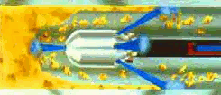
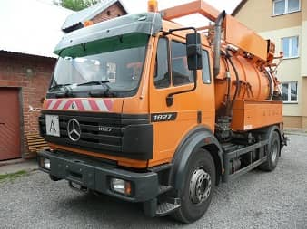

Czyszczenie kanalizacji
Metoda ciśnieniowo – hydrodynamiczna polega na wypłukiwaniu wodą pod wysokim ciśnieniem wszelkich nieczystości znajdujących się w kanale. Nasze urządzenie przy pomocy specjalnej pompy wytwarza ciśnienie o wartości ponad 140 barów czyszcząc przewody rurowe o średnicy do 800mm. Dysze czyszczące dobierane są w zależności od średnicy kanału oraz jego zanieczyszczenia.

Poprzez czyszczenie przy użyciu wysokiego ciśnienia nie używamy środków chemicznych oraz detergentów dzięki czemu nie zanieczyszczamy środowiska.
Zakres naszych usług to:
- usuwanie awarii kanalizacyjnych
- konserwacja kanalizacji
- czyszczenie kanalizacji (sanitarnej, deszczowej, przemysłowej, studzienek, wypustów ulicznych, osadników, instalacji domowej)
- pomiary szczelności kanalizacji

Dlaczego my?
Posiadamy auto ciężarowe ciśnieniowo-asenizacyjne typu WUKO ze zbiornikiem o pojemności ponad 9.000 litrów. Czyszczenie kanalizacji odbywa się przy użyciu czystej wody pod ciśnieniem 140 barów. Posiadamy również szereg dysz przeznaczonych do różnego rodzaju zanieczyszczeń i średnic rur.
Korzyści:
- uniknięcie wystąpienia awarii (zatory, wylewanie ścieków)
- uniknięcie zarastania kanalizacji (korzenie, osad, przedmioty stałe)
- usunięcie nieprzyjemnego zapachu wydobywającego się ze studzienek
- poprawienie wyników badań ścieków, a zatem uniknąć kar wynikających z przekroczenia dopuszczalnych wartości zanieczyszczenia ścieków